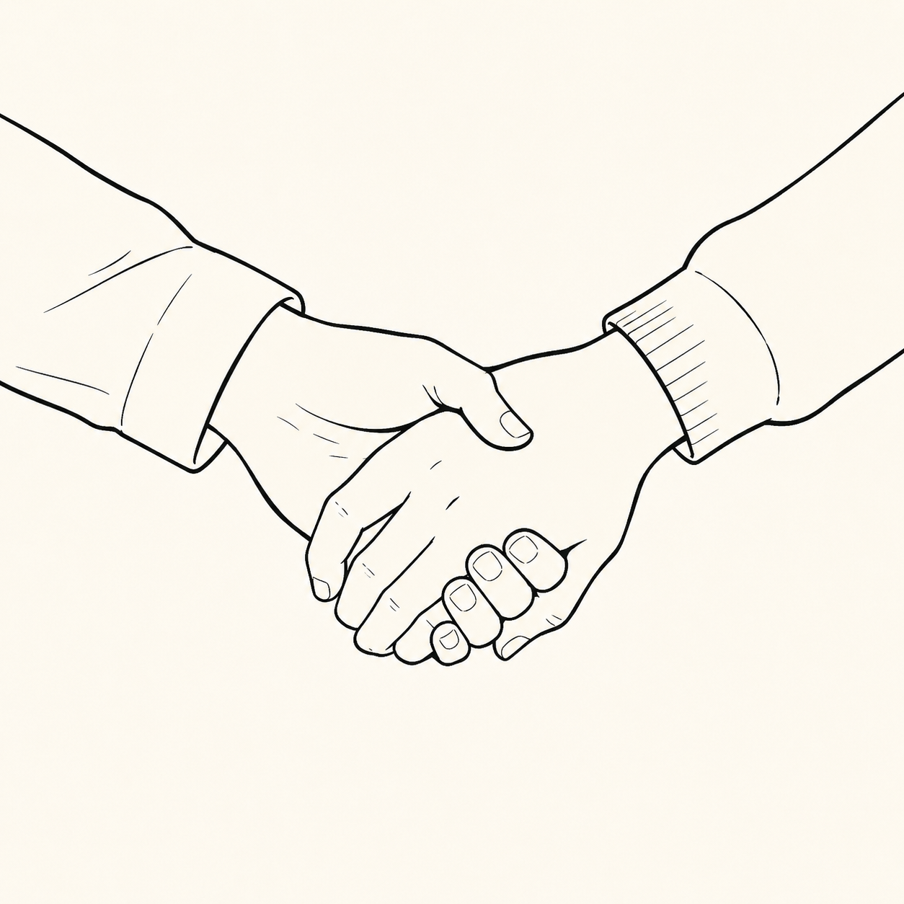

A Play

(By the grove behind the institute's paddock. The Young Student is digging a little hole in the ground. A hunter's knife lies next to the hole. As does something furry.)
(The First and the New Student approach. They are holding hands. On spotting the Young Student their hands part.)
What are you doing here? So late in the evening?
I honour my brother's memory.
He was a good soul.
You don't have to pretend with me. He was useless.
That is a little harsh.
I wanted to feel how it feels.
How what feels?
To cut a throat.
(The Young Student grabs the furry object and holds it up. It is a cat with a cut throat.)
Oh no, that's Mimi.
Me me.
Mimi.
She is our house cat.
Mimi. Fine. But past tense please.